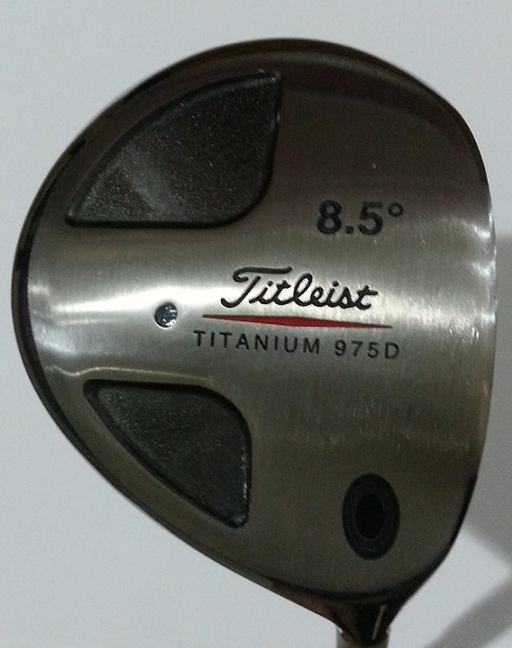
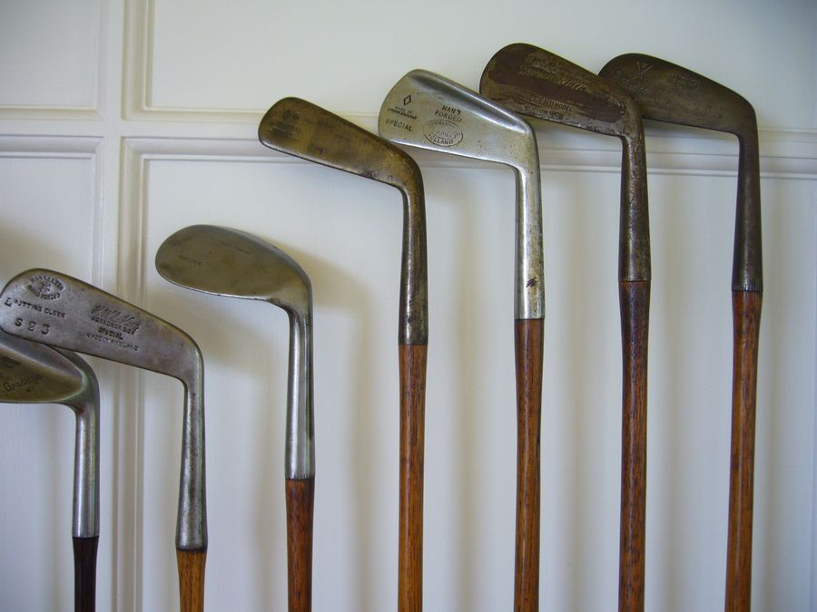
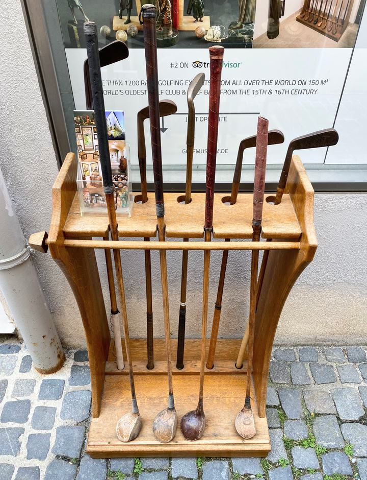
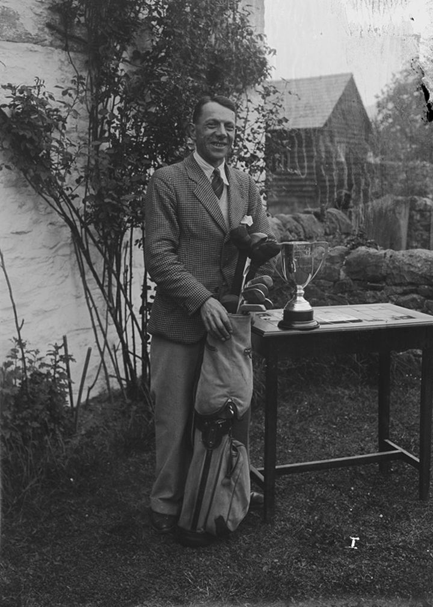

골프를 처음 보면 의아한 것 중 하나가 클럽 개수입니다. 야구는 배트 하나, 테니스는 라켓 하나면 되는데, 골프는 무거운 가방에 클럽을 잔뜩 넣고 다니죠. 그 이유는 단 하나, 거리마다 다른 클럽이 필요하기 때문입니다. 오늘은 이 클럽들의 종류를 하나씩 살펴봅니다.
왜 14개일까

골프 규칙상 한 라운드에 들고 칠 수 있는 클럽은 최대 14개입니다. 1930년대까지는 제한이 없어 25개씩 들고 다니는 선수도 있었는데, 캐디의 부담이 너무 크고 장비 경쟁이 과열되자 1938년 14개로 제한이 정해졌습니다. 어떤 14개를 고르느냐는 골퍼의 선택이고, 그 구성 자체가 하나의 전략이 됩니다.
클럽은 크게 우드 · 아이언 · 웨지 · 퍼터 네 식구로 나뉩니다. 멀리 보내는 것부터 홀에 넣는 것까지, 거리 순서대로 따라가 봅시다.
가장 멀리 — 우드와 드라이버

가장 멀리 보내는 클럽이 우드(Wood)입니다. 그중에서도 1번 우드를 드라이버라 부르며, 보통 티샷에서 첫 타를 칠 때 씁니다. 헤드가 크고 페이스 각도(로프트)가 작아 공을 낮고 멀리 보냅니다.
이름이 '우드'인 이유는 옛날엔 헤드를 진짜 나무로 깎아 만들었기 때문입니다. 지금은 대부분 티타늄·카본 소재라 나무는 한 조각도 없지만, 이름만은 그대로 남았죠.
두루두루 — 아이언
중간 거리를 책임지는 게 아이언(Iron)입니다. 보통 숫자가 작을수록 멀리, 클수록 가까이 갑니다. 3번 아이언은 멀고 낮게, 9번 아이언은 가깝고 높게 날아가죠. 일반적으로 5번부터 9번까지를 자주 씁니다.
요즘은 긴 아이언(3·4번) 대신 치기 쉬운 하이브리드(유틸리티)를 넣는 골퍼가 많습니다. 우드의 관용성과 아이언의 정확성을 섞은 클럽이죠.
섬세하게 — 웨지
그린 근처 짧은 거리와 벙커(모래)에서 쓰는 게 웨지(Wedge)입니다. 페이스 각도가 가장 커서 공을 높이 띄워 부드럽게 떨어뜨립니다. 피칭·갭·샌드·로브 웨지 등으로 세분되며, 점수를 줄이는 '쇼트 게임'의 핵심 무기입니다.
마지막 한 뼘 — 퍼터
그린 위에서 공을 굴려 홀에 넣는 클럽이 퍼터(Putter)입니다. 거리를 내는 클럽이 아니라 방향과 세기를 정밀하게 다루는 클럽이라, 생김새도 가장 독특합니다. "드라이버는 쇼, 퍼터는 돈"이라는 골프 격언이 있을 만큼, 점수에 직접 영향을 주는 클럽이죠.
| 클럽 | 주 용도 | 특징 |
|---|---|---|
| 드라이버·우드 | 가장 먼 거리 | 헤드 크고 로프트 작음 |
| 하이브리드 | 중장거리 | 우드+아이언 절충 |
| 아이언 | 중간 거리 | 숫자 클수록 가까이·높이 |
| 웨지 | 짧은 거리·벙커 | 높이 띄워 부드럽게 |
| 퍼터 | 그린 위 | 굴려서 홀에 넣음 |
클럽에도 역사가 있습니다

지금은 숫자로 부르지만, 옛날엔 클럽마다 고유한 이름이 있었습니다. 매시(mashie)는 오늘날의 5번 아이언쯤, 니블릭(niblick)은 웨지에 가까운 클럽이었죠. 역사 편에서 만난 그 이름들입니다.

강철 샤프트가 보급되고, 다시 카본과 티타늄이 등장하면서 클럽은 더 멀리, 더 정확하게 진화했습니다. 하지만 '거리마다 다른 클럽을 쓴다'는 기본 원리는 100년 전이나 지금이나 똑같습니다.
마치며

입문자라면 처음부터 14개를 다 갖출 필요는 없습니다. 드라이버, 7번 아이언, 웨지, 퍼터 정도만 있어도 라운드를 시작할 수 있죠. 익숙해지면서 하나씩 더해 가는 재미도 골프의 일부입니다.
중요한 건 비싼 클럽이 아니라, 내 스윙에 맞는 클럽입니다. 그리고 그건, 내 스윙을 먼저 아는 데서 시작합니다.